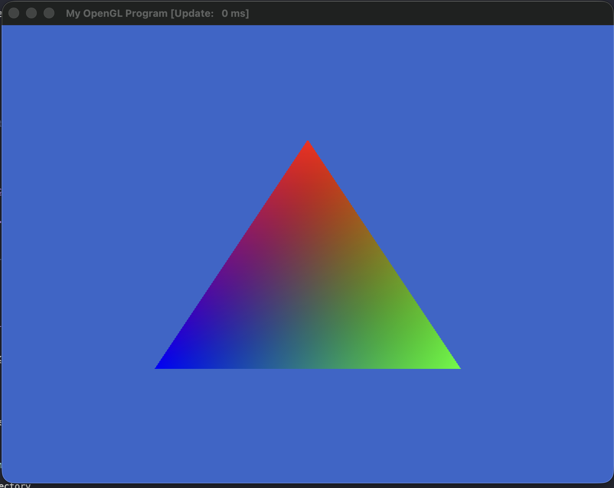
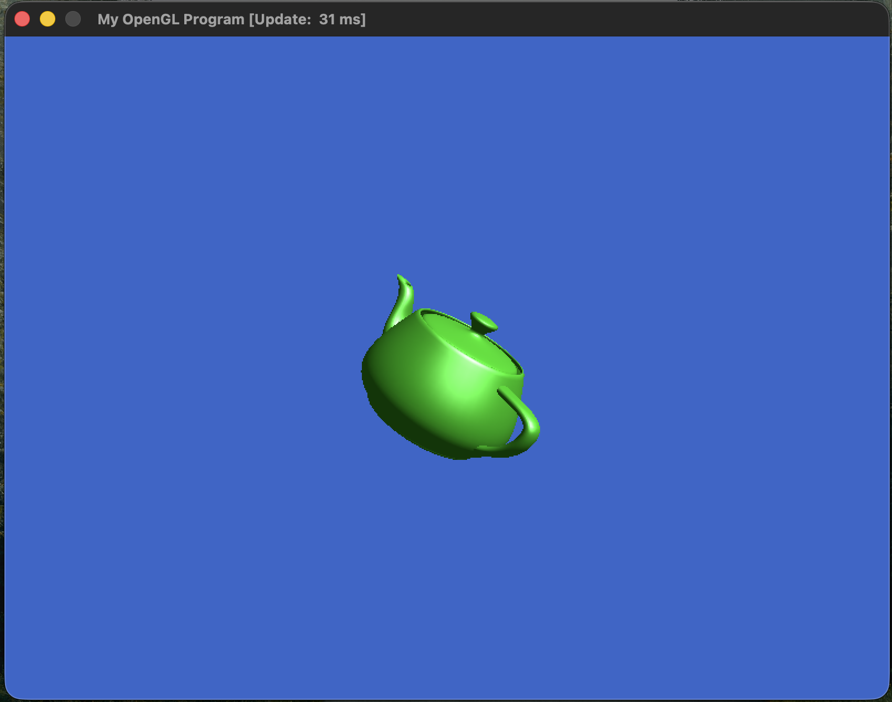
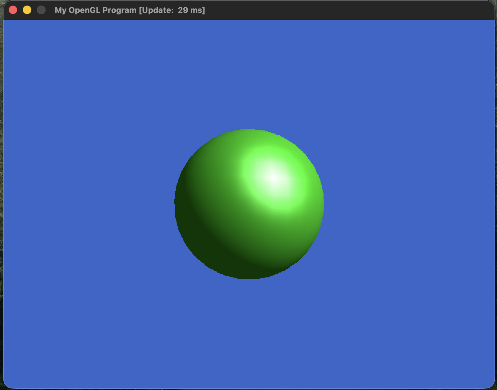
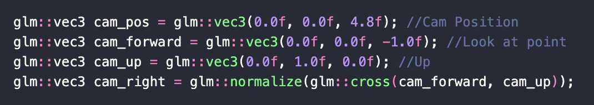
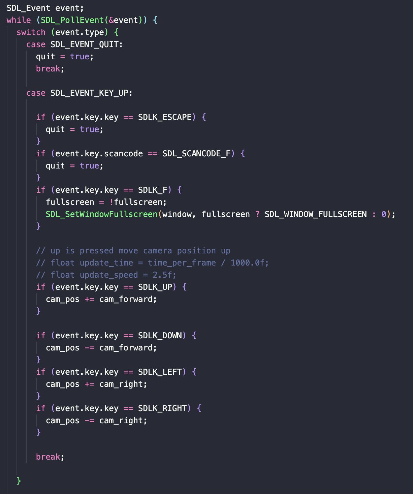
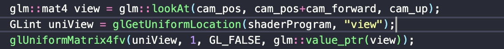

Description
The first section contains videos and images of the OpenGL demos running, and the second section provides answers to the homework questions. I completed the first extra credit task by modifying the camera position in response to keyboard inputs in the cube3d.cpp demo. The video and implementation details are included below.
Section A: Running Demos
-
TriangleColored.cpp
 -
Cube3D.cpp
-
CubeLit.cpp
-
ModelLoad.cpp
 
Section B: Written Questions
Q1
Without depth testing, the cube's faces have no meaningful order—there's no way to tell which color represents the top, bottom, or any other side. With depth testing enabled, the GPU renders triangles based on their distance from the camera, producing the correct ordering of faces.
Q2
This line where we are checking if the escape key is pressed
windowEvent.key.key == SDLK_ESCAPE to
windowEvent.key.key == SDLK_Q
Q3
Where we set the lightdir in the fragement source, changed it from
"const vec3 lightDir = vec3(0,1,1);" to
"const vec3 lightDir = vec3(0,1,-1);"
Q4: Rendering of large triangle
Extra Credit
-
I added support for the up, down, left, and right arrow keys in cube3d.cpp. Based on the key pressed, the camera's position is updated accordingly. Pressing left or right moves the camera horizontally in those directions, while pressing up moves the camera forward (zooming in). Pressing down moves the camera backward.
added the following lines to Cube3D.cpp
defined global variables for the camera position, forward, right and up vectors
logic for keyboard inputs
camera matrix is our global parameters, the look at point is a combination of cameras position and the forward vector
video of the program running